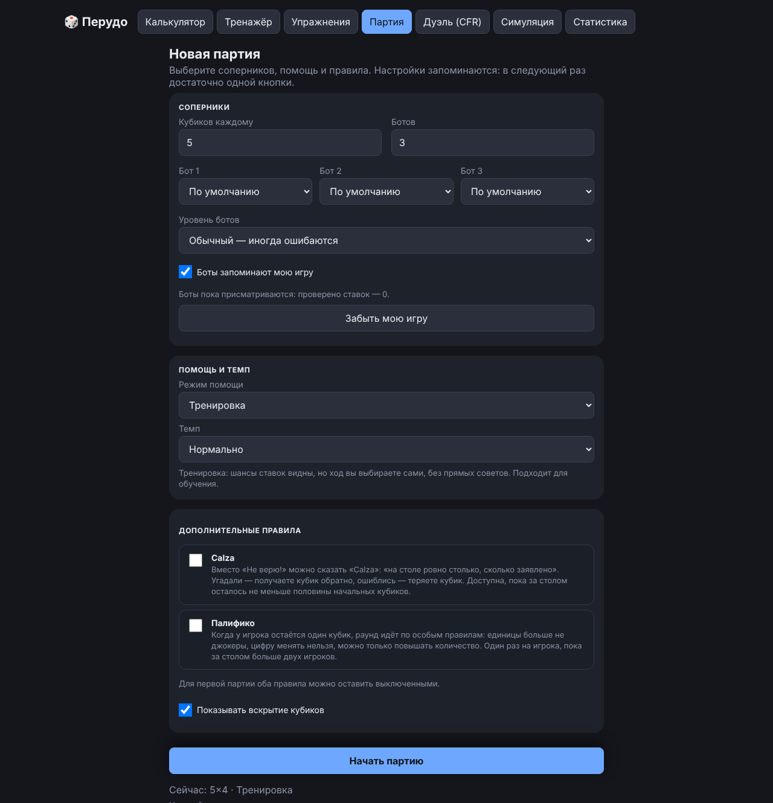
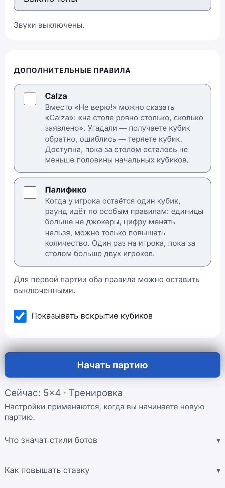

Руководство / Настройки партии и боты
Настройки партии и боты
Перед первой партией настройки показаны на экране подготовки в карточках «Соперники», «Помощь и темп», «Звуки» и «Дополнительные правила».

Что можно настроить
- Кубиков каждому — от 1 до 10.
- Ботов — от 1 до 5 (за столом получается от 2 до 6 игроков).
- Бот 1, Бот 2… — стиль каждого бота (см. ниже).
- Уровень ботов — как часто боты ошибаются в расчётах.
- Боты запоминают мою игру и кнопка «Забыть мою игру» — подстройка ботов под вас.
- Темп — как быстро ходят боты: «Пошагово», «Медленно», «Нормально», «Быстро».
- Показывать вскрытие кубиков — окно с кубиками всех игроков после проверки.
- Звуки — выключены по умолчанию; можно включить «Тихо» или «Обычно». Слышны сигнал вашего хода, «Не верю!», потеря кубика, конец партии. Звуки создаются прямо в браузере, вибрации нет. На быстром темпе ставки ботов и раздача не озвучиваются, а в фоновой вкладке звука нет.
Режим помощи
- Новичок — приложение показывает шансы и прямо советует ход.
- Тренировка (по умолчанию) — показывает шансы, но решаете вы сами.
- Игра (без подсказок) — как за настоящим столом.
Дополнительные правила
Две карточки с переключателем и пояснением. Для первой партии их можно оставить выключенными.
- Calza — вместо «Не верю!» можно сказать «Calza»: «на столе ровно столько, сколько заявлено». Угадали — получаете кубик, ошиблись — теряете.
- Палифико — когда остаётся один кубик, раунд идёт без джокеров и с фиксированной цифрой.
Подробнее об обоих правилах написано в правилах игры.


Запоминание настроек
Когда вы нажимаете «Начать партию», приложение сохраняет все эти настройки. После перезагрузки страницы они возвращаются на место, и достаточно одной кнопки. Если поменять поля, но не начать партию, прежние настройки сохранятся.
Кнопка «Сбросить к стандартным настройкам» под «Начать партию» появляется, когда настройки отличаются от стандартных: она возвращает значения по умолчанию и стирает сохранённое. Настройки хранятся в браузере и входят в экспорт и в резервную копию.
Настройки применяются к новой партии. Во время игры их можно открыть значком ⚙️ (на компьютере это вкладка справа от стола), но изменения заработают после нажатия «Начать новую партию».
Боты
За столом вы играете против компьютерных соперников. Бот видит только свои кубики, общее число кубиков и текущую ставку, в чужие кубики он не заглядывает. Как и живой игрок, он считает шансы, иногда блефует и иногда ошибается.
Стили
У каждого бота есть стиль, то есть манера игры. Значок стиля виден рядом с именем бота за столом.
| Стиль | Как играет | Как с ним играть |
|---|---|---|
| 🛡️ Осторожный | Ставит только надёжно, почти не блефует | Если он повысил, чаще всего он прав: верьте |
| 🎭 Блефующий | Часто завышает ставку | Проверяйте его ставки на «Не верю!» |
| 🧠 Умный | Считает вероятности, умеет говорить Calza, лучше всех подстраивается под вас | Самый сильный соперник |
| 🔥 Агрессор | Быстро взвинчивает ставки, редко проверяет | Не давайте себя разогнать: проверяйте на «Не верю!», когда ставка уже слишком высока |
| 🧐 Скептик | Не доверяет чужим ставкам, часто говорит «Не верю!» | Делайте надёжные ставки, а блефуйте реже |
Для каждого бота стиль выбирается отдельным списком: «По умолчанию», «🎲 Случайный» или один из пяти стилей. Так можно, например, посадить за стол пятерых скептиков и потренироваться против них. Если ничего не выбирать, первые три бота получат «Осторожного», «Блефующего» и «Умного» по кругу. При 4–5 ботах стили повторяются.
Уровень ботов
Он показывает, как часто боты ошибаются в оценке шансов, как живые игроки, которые считают «на глаз».
- Лёгкий — ошибаются часто, подходит для начала.
- Обычный (по умолчанию) — ошибаются иногда.
- Сильный — считают точно и не ошибаются.
Размах ошибки зависит и от стиля: «Блефующий» и «Агрессор» ошибаются больше, «Умный» меньше всех.
Память: боты запоминают вашу игру
Если галочка «Боты запоминают мою игру» включена (по умолчанию), боты замечают, как часто ваши проверенные ставки оказывались ложными.
- Если вы часто блефуете, боты начинают чаще говорить вам «Не верю!».
- Если вы играете честно, боты чаще верят вашим ставкам.
Сильнее всех подстраивается «Умный», почти не реагирует «Агрессор». Под галочкой написано, сколько ваших ставок боты уже видели. Пока их меньше трёх, боты только «присматриваются»: поправка на ваш стиль совсем небольшая.
Боты видят только проверенные ставки, как и живой соперник за столом: если вашу ставку никто не проверил, остаётся неизвестным, блефовали вы или нет. Память хранится только в вашем браузере и сохраняется между партиями. Кнопка «Забыть мою игру» стирает её, «Сбросить всё» на вкладке «Статистика» тоже. Чтобы боты не подстраивались, снимите галочку (изменение применяется к новой партии).